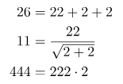

Есть одна очень миленькая математическая задачка, которая может быть интересна людям на очень разных уровнях:
"У вас есть четыре двойки и какое-то целевое натуральное число. При помощи любых математических операций сгенерируйте целевое число при помощи этих двоек, не используя больше никаких цифр."
Некоторые примеры могут придумать и дети из начальной школы:
В средних классах дети узнают о степенях, факториалах и так далее, что существенно расширяет диапазон:
А потом уже идут хитрости; например, число 22 (двадцать два) можно считать допустимым использованием двух двоек и так далее; так что можно записать:

Известно, что получить 7 очень сложно, но если допустить применение ещё более математических инструментов, например, гамма-функции, то всё становится просто:
Так что эта задача не перестаёт быть интересной даже после того, как защитишь диплом в университете! На самом деле, это, похоже, было любимым досугом математиков в 1920-х. Но потом Поль Дирак всё испортил, найдя общее решение для любого числа.
Всё дело во вложенных квадратных корнях:
Если применить квадратный корень n раз:
То остаётся лишь использовать логарифмы по основанию 2:
И ещё раз:
Так мы приходим к общей формуле:
Тут есть лишь один небольшой изъян: используется не четыре, а три двойки. Впрочем, это легко исправить. Так как
мы можем заменить любую цифру на это выражение и получить ровно четыре двойки:
Кто-то может сказать, что это жульничество, но всё соответствует правилам задачки! Стоит отметить, что сущность n на самом деле нигде не встречается — это лишь вспомогательное обозначение числа повторяющихся квадратных корней. Вот, например, ещё один способ выразить 7:
Здесь ровно четыре двойки и при этом для вычислений используется только приемлемые элементарные математические операции. Очевидно, таким образом можно выразить любое число; самое сложное — писать все эти квадратные корни!